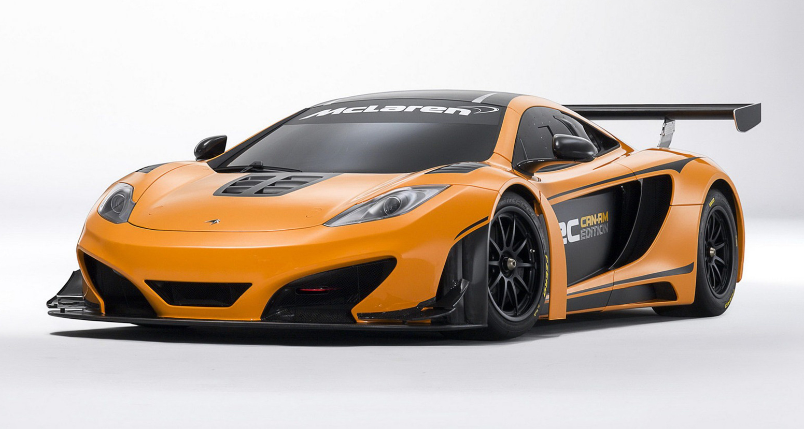

In 1981 McLaren merged with Ron Dennis' Project Four Racing; Dennis took over as team principal and shortly after organised a buyout of the original McLaren shareholders to take full control of the team. This began the team's most successful era: with Porsche and Honda engines, NikiLauda, Alain Prost and AyrtonSenna took between them seven drivers' championships and McLaren six constructors' championships. The combination of Prost and Senna was particularly dominant—together they won all but one race in 1988—but later their rivalry soured and Prost left for Ferrari. Fellow English team Williams offered the most consistent challenge during this period, the two winning every constructors' title between 1984 and 1994. However, by the mid-1990s Honda had withdrawn from Formula One, Senna had moved to Williams and the team went three seasons without a win. With Mercedes-Benz engines, West sponsorship and former Williams designer Adrian Newey, further championships came in 1998 and 1999 with driver Mika Häkkinen and during the 2000s the team were consistent front-runners, driver Lewis Hamilton taking their latest title in 2008. In 2009 Dennis retired as team principal of McLaren handing the former role to longtime McLaren employee Martin Whitmarsh.